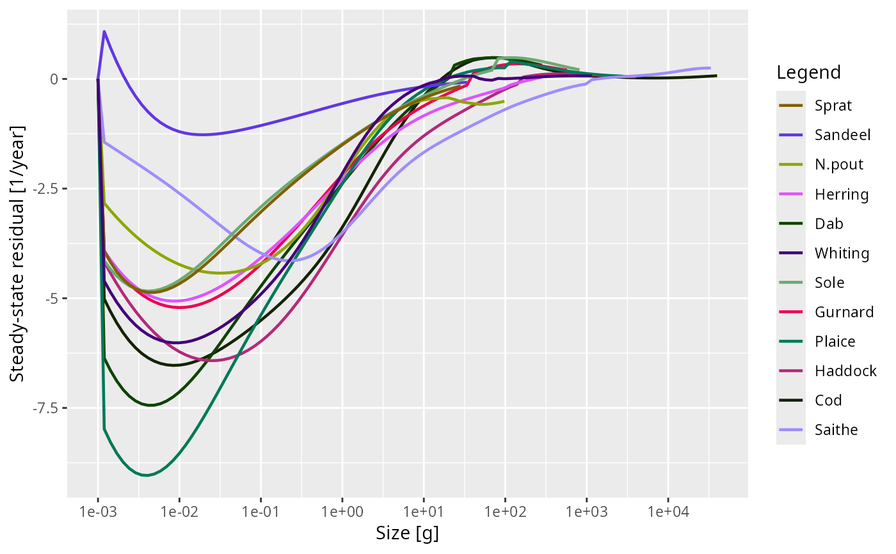

![[Experimental]](figures/lifecycle-experimental.svg) Returns the rate at which the abundances would change if the model were
projected forward from its current initial state, resolved by species and by
size. At a steady state this is zero, so it answers the question that every
calibration workflow otherwise has to remember to ask: is this model still
at its steady state?
Returns the rate at which the abundances would change if the model were
projected forward from its current initial state, resolved by species and by
size. At a steady state this is zero, so it answers the question that every
calibration workflow otherwise has to remember to ask: is this model still
at its steady state?
Usage
getSteadyResidual(
params,
effort = params@initial_effort,
dt = 1e-04,
measure = c("biomass", "per_capita")
)Arguments
- params
A MizerParams object.
- effort
The fishing effort at which to evaluate the residual. By default the initial effort stored in
params, which is the effort the model's steady state belongs to.- dt
The step length used for the resource and other components, whose dynamics functions are only available as one-step maps. Smaller is more accurate. Not used for the consumers, whose rate is exact.
- measure
-
Which rate of change to report.
"biomass"(the default) gives the contribution of each size class to the relative rate of change of its species' biomass, which sums over sizes to the drift thatisSteady()judges a model by."per_capita"gives the rate of change of each size class relative to its own density. See the sections above.
Value
An ArraySpeciesBySize object (species x size) of rates in 1/year:
with measure = "biomass", contributions to each species' relative rate of
biomass change, which sum over sizes to that rate and are NA only for a
species with no biomass at all; with measure = "per_capita", per-capita
rates of change, NA where the size class holds no fish. It carries two
further attributes:
resourceThe same measure for the resource, a numeric vector over
w_full.otherA named list with one entry per other component, holding its per-capita rate of change, or
NAfor a component whose state is not numeric. These are reported but not folded into the biomass drift thatisSteady()judges a model by: mizer does not know what a component's state is measured in, so it cannot form a biomass for it.
Details
There are two ways to say how fast a size class is changing, and measure
selects between them. Both are in units of 1/year.
measure = "biomass", the default
How much of its species' biomass each size class is adding or removing per
year:
$$C_i(w) = \frac{1}{B_i}\,\frac{dN_i(w)}{dt}\,w\,\Delta w,
\qquad B_i = \int N_i(w)\,w\,dw.$$
The bin weight \(w\,\Delta w\) is the one sizeIntegral() uses for a
biomass, so it follows whichever quadrature scheme the model is on (see
second_order_w()), and the values add up over sizes to the relative rate
of change of the species' biomass:
rowSums(getSteadyResidual(params)) # (dB_i/dt) / B_i, one per speciesThat total is the number isSteady(), the summary() line of a
MizerParams object and project(check_steady = TRUE) all judge
a model by, and it is the drift that would actually show up in
plotBiomass(). This array therefore says where a model is unsteady in the
same currency that mizer uses to decide whether it is, and a size class can
only be conspicuous in it if it is moving enough biomass to matter.
That last property is why this is the default. A size class near the egg size turns over in hours, and one above the size where growth stops decays exponentially towards zero for ever; both carry enormous per-capita rates while holding no mass at all. Weighting by biomass gives them the weight they deserve, which is none, with no need for a threshold below which a class is declared to hold nothing.
measure = "per_capita"
The rate of change of each size class relative to its own density,
$$R_i(w) = \frac{1}{N_i(w)}\frac{dN_i(w)}{dt}.$$
A value of 0.05 means that size class would grow by about 5% over the first
year of a projection, and -0.05 that it would shrink by about that much.
This is the scale-free reading. It shows a size class whose growth and
mortality are out of balance even when the class holds a millionth of its
species' biomass, which is a real statement about the structure of a model,
but not one about whether anything observable is moving.
Do not reduce this measure to max(abs(...)). Its extremes belong to the
fastest-relaxing cells, which are exactly the ones holding no mass: on
NS_params the largest per-capita rate is 1.2/year, in a cell holding 2e-8
of its species' biomass, while the biomass drift is 0.014/year and the model
counts as settled. Under the second-order scheme this is severe enough to
reverse the ordering between a converged model and one that has just been
knocked off its steady state.
How the rates are obtained
For the consumers dN/dt is exact, not a finite-difference approximation:
the backward-Euler transport coefficients used by project() satisfy
\(A N - S = -dt\,dN/dt\) identically, so evaluating them at dt = 1 gives
the instantaneous rate with no time-discretisation error. The resource and
other components have arbitrary user-supplied dynamics functions, so their
rates are obtained by taking one short step of length dt, accurate to
\(O(dt)\).
Everything is evaluated at the model's own stored state — initialN(),
initialNResource(), initialNOther() — using the model's own reproduction
function and its own resource_dynamics. Nothing is substituted or held
fixed. The number therefore answers exactly "if I called project() now,
would anything move?", which is why it works for every model rather than only
for the semichemostat resource that findSteadyState(solver = "newton")
requires.
Reading the result
The returned array is an ArraySpeciesBySize object, so it prints, summarises and plots itself:
res <- getSteadyResidual(params)
rowSums(res) # the biomass drift of each species
plot(res) # which species, and at which sizesThe plot is the diagnostic one: a model that is off steady state is usually
off in one species, or one part of the size range, and the plot says which.
Mizer's size grid is logarithmic, so the bin widths are proportional to w
and the default measure keeps the shape of a density per unit of log size
when drawn against a logarithmic size axis: equal areas under the curve are
equal contributions to the drift.
With measure = "per_capita" a size class with no fish in it has no relative
rate of change — it is 0/0 — and is returned as NA, so pass
na.rm = TRUE to any summary. The default measure needs no such exception:
dN/dt is perfectly well defined in a class with no fish in it, which can be
filling up, and its contribution to the biomass drift is reported like any
other.
See also
isSteady(), tuneSteadyState(), findSteadyState(),
getStability()
Other summary functions:
getBiomass(),
getDiet(),
getGrowthCurves(),
getN(),
getSSB(),
getTrophicLevel(),
getTrophicLevelBySpecies(),
getYield(),
getYieldGear()
Examples
# The relative rate of change of each species' biomass, in 1/year
rowSums(getSteadyResidual(NS_params))
#> ℹ No `a` column so using a = 0.01 in w = a l^b, with w in g and l in cm.
#> ℹ No `b` column so using the isometric default b = 3 in w = a l^b.
#> Sprat Sandeel N.pout Herring Dab Whiting
#> 0.0032783633 0.0013206130 0.0138556255 0.0080776332 0.0050505885 0.0037296515
#> Sole Gurnard Plaice Haddock Cod Saithe
#> 0.0032863902 0.0091832161 0.0068072048 0.0080561894 0.0002875087 0.0021111526
# \donttest{
# Matching biomasses moves the model off its steady state, and the plot
# shows which species and which sizes have moved.
params <- NS_params
species_params(params)$biomass_observed <-
c(0.8, 61, 12, 35, 1.6, 20, 10, 7.6, 135, 60, 30, 78)
species_params(params)$biomass_cutoff <- 10
params <- calibrateBiomass(params)
params <- matchBiomasses(params)
#> `matchBiomasses()` has rescaled the model and so moved it off its steady state. Run `tuneSteadyState()` to settle it again. You can check with `getSteadyResidual()`.
plot(getSteadyResidual(params))

# }